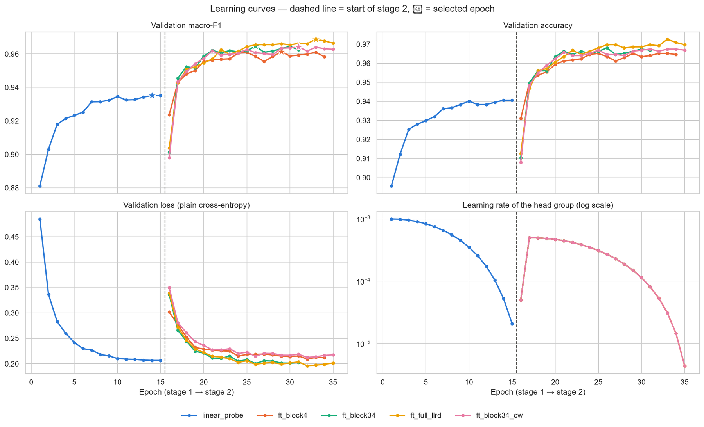
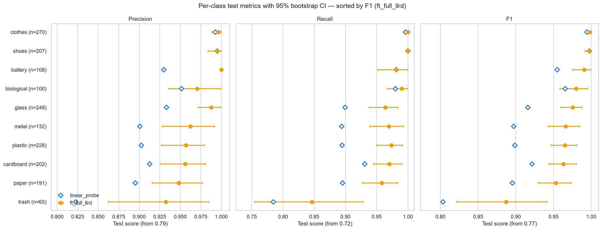
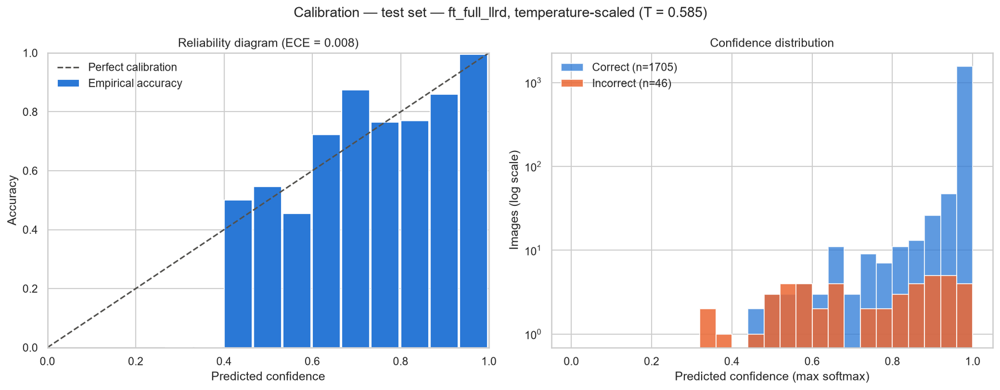
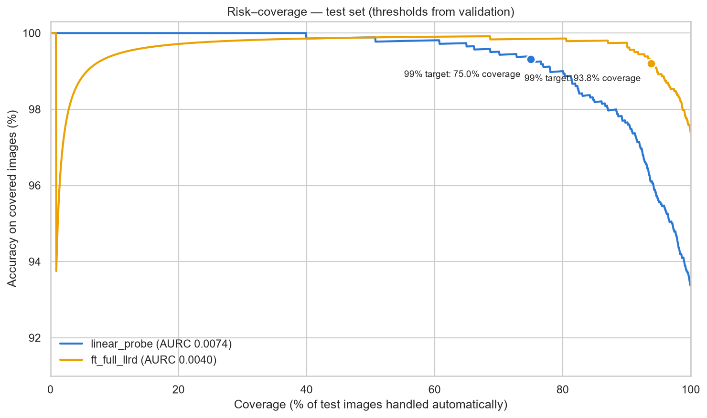
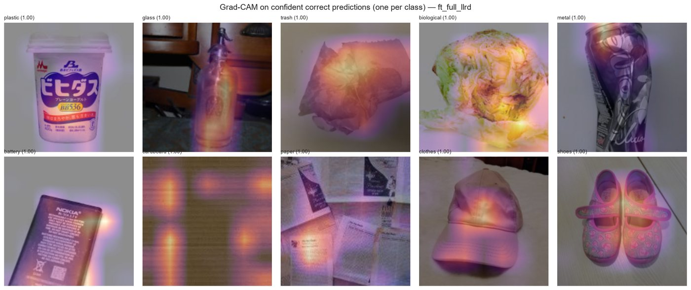
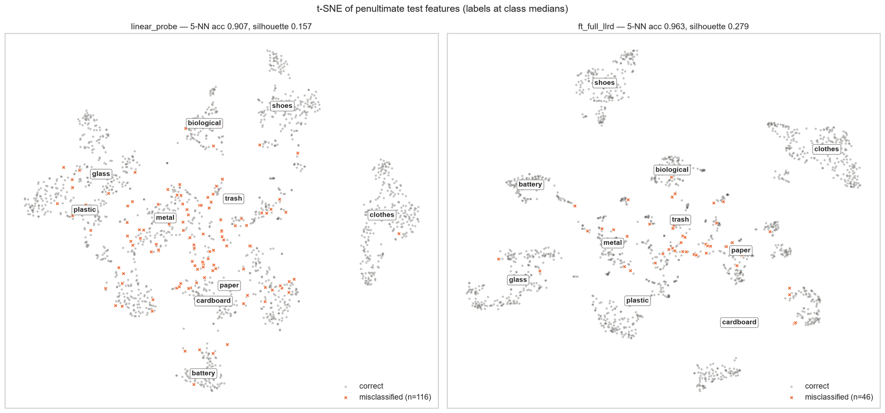
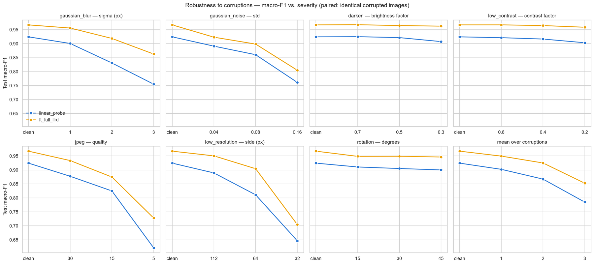
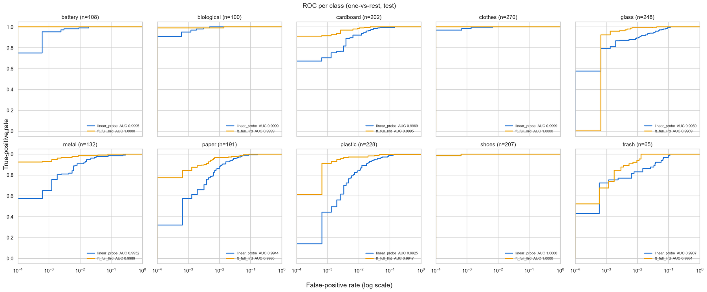

Sort a photo of waste into ten streams.
A RegNetY-1.6GF backbone, fine-tuned on 12,259 photos of household waste. It gets 97.4% of a held-out test set right — a test set built so that no image in it has a near-duplicate anywhere in training.
The model runs on your device. Your photo is never uploaded.
Your image
or click to choose a file
No photo handy? These ten come from the held-out test set — the model never saw them while training.
Prediction
Probabilities are temperature-scaled, so they can be read as confidences rather than just a ranking.
Results on the test set
1,751 images, scored once, after every decision had already been made on the validation split. Ranges are 95% bootstrap confidence intervals; the comparison is against the frozen-backbone linear probe that stage 2 started from.
Per class
Sorted weakest first. Missed counts images of that class the model assigned elsewhere; false alarms counts images of other classes it assigned to this one.
| Stream | Images | F1scale 0.85 – 1.00 | Precision | Recall | Missed | False alarms | vs probe |
|---|
What gets confused with what
Rows are the true stream, columns the prediction. The diagonal is outlined: those are the 1,705 correct calls out of 1,751.
The five runs
Each run was trained once and its predictions cached, so the comparison below is computed from stored logits rather than from a re-run. The winner was chosen on validation macro-F1 alone.
| Run | What was trainable | Params | Epochs | Time | Val macro-F1 | Test macro-F1 |
|---|
How it was built
The ordering matters: each stage depends on the one before it, and the evaluation protocol was fixed before any model was trained.
Audit every file
All 12,259 images were opened and fully decoded, recording mode, real format, geometry, an MD5 and a 64-bit perceptual hash. Nothing was corrupt; seven files had an extension that lied about their real format, which is harmless because Pillow sniffs the actual one.
Group the near-duplicates
Web-scraped datasets repeat the same photo. Images within a Hamming distance of 4 of each other were linked and merged transitively into groups. Groups whose members carried different labels are the same picture annotated twice inconsistently, so they were dropped as label noise.
Split so nothing leaks
A plain stratified random split leaves about 0.1% of validation and test images with a
near-duplicate in training — small, but it inflates the score. Using
StratifiedGroupKFold twice makes the 71 / 14.5 / 14.5
split stratified by class and disjoint at the group level, so the leakage is
exactly zero at no extra cost.
Fit a linear probe first
The ImageNet backbone was frozen and only a new 10-class head trained — 8,890 parameters out of 10.3M. It reaches 0.935 validation macro-F1, and train and validation curves stay within ~1.5 pp of each other: the frozen features are a capacity limit, not a variance problem. That is the signal that fine-tuning is worth doing.
Fine-tune four ways
Every run starts from that probe, so the head is already fitted when the first gradients reach the backbone. Progressively more of the network was unfrozen with lower learning rates for earlier stages, under one epoch of warm-up then cosine decay, label smoothing, and stronger augmentation to match the extra capacity.
Pick a winner without fooling yourself
Ranking on a point estimate picks winners by noise. Each run was compared to the leader with a paired bootstrap; four of the five were statistically tied on validation macro-F1, and the tie was broken by temperature-scaled validation NLL — a proper scoring rule, so it rewards honest probabilities rather than a luckier argmax.
Calibrate, then export
Horizontal-flip test-time augmentation was measured and rejected: it doubles inference cost for a change of −0.13 pp that the bootstrap cannot distinguish from zero. Label smoothing had left the model under-confident, so a single temperature fitted on validation pulled expected calibration error from 0.108 to 0.008 without changing a single prediction. The result is one file holding weights, class order, preprocessing, temperature and the review threshold — which is what this page downloads.
Figures from the notebook
Generated by the evaluation sections of the notebook, from the same stored logits as the tables above.








Run it yourself
Everything on this page comes from one seeded run. The notebook and the scripts share the same configuration file, so either path reproduces it.
Train
Download Garbage
Classification v2 into data/garbage/, one folder per class, then:
git clone https://github.com/evez12/Garbage-Classifier.git
cd Garbage-Classifier
pip install -r requirements.txt
# all five runs, then selection and export
python scripts/train.py --model all
# or a single experiment
python scripts/train.py --model ft_block34Classify
The exported bundle is all inference needs — weights, class order, preprocessing, temperature and the review threshold:
python scripts/predict.py photo.jpg
# rebuild the model this page runs
pip install -r requirements-onnx.txt
python scripts/export_onnx.pyTrained weights are attached to the latest release if you would rather not retrain.